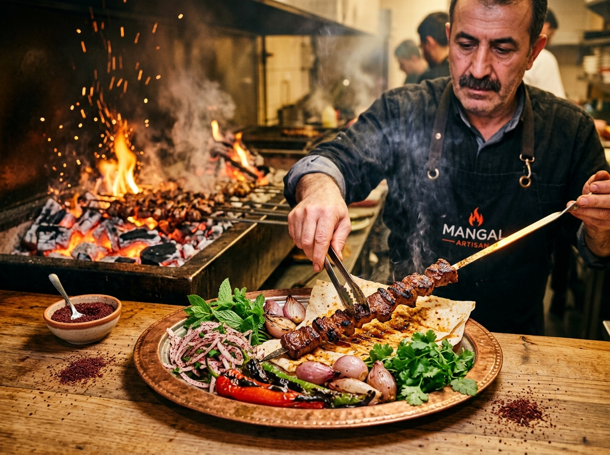

Zanaat & Gelenek
İki Büyük Mirasın
İki Büyük Mirasın
Kusursuz Uyumu
Han Kebap, Anadolu'nun köklü köz kültürünü dünya standartlarında bir dry-aged steakhouse zarafetiyle sunar. Gösterişten uzak, lezzetin ve malzemenin saflığına adanmış bir mutfak felsefesi.
Trakya ve Balıkesir meralarından seçilen birinci sınıf etler; Himalayan pembe tuz bloklarıyla donatılmış mahzenlerimizde 28 gün boyunca dinlendirilir, eti yormadan konsantre bir lezzet yoğunluğuna ulaştırılır.
Prime Çiftlikler
Doğal meralarda beslenen tescilli ırklardan elde edilen yüksek mermerleşme.
28 Gün Tuz Odası
Doğal nem ve ısı dengesinde sabırla gelişen ipeksi doku.
Meşe Kömürü
Kimyasal katkısız, yüksek kalorili saf meşe közünde döküm ızgara.
Zırh Zanaati
Etin suyunu liflerinde saklayan geleneksel el zırhı kıyması.